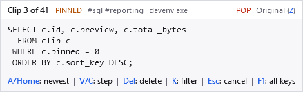
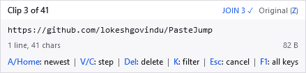
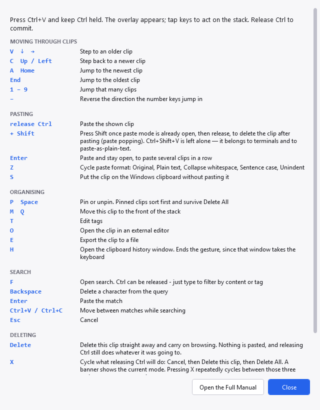
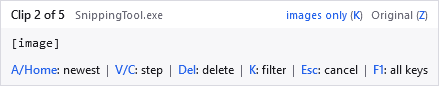
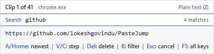
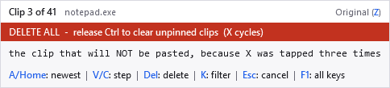
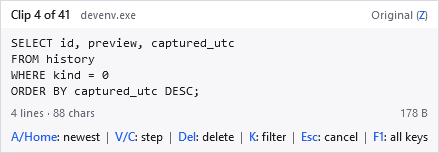
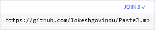

Press Ctrl+V and keep Ctrl held. An overlay
appears near the text caret. Release Ctrl to commit whatever it is showing.

Clip 3 of 41. The chips read: pinned, its tags, the application it was copied from, POP because
Shift is held, and the current paste format.
Every key below works while Ctrl is still down. You never have to look at the overlay to
use it — it is there so you can, not because you must.
| Key | Action |
|---|---|
| V ↓ → | Step to an older clip. Tap again to keep going back. |
| C ↑ ← | Step back towards a newer clip. |
| A Home | Jump straight back to the newest clip. This is the way out of "I have
tapped V two hundred times and cannot get back" — one key, however deep you are. |
| End | Jump to the oldest clip in the stack. |
| 1 – 9 | Jump that many clips at once. The numpad digits work too. |
| − | Reverse the direction the number keys jump in. Numpad minus works too. |
The arrow keys and Home are alternatives, not replacements: the letters are the original
Clipjump layout and they are not going anywhere. Use whichever your hand reaches for. The same applies to
P beside Space and M beside Q further down.
H is the one key whose meaning changed. In Clipjump it opened the clip in an editor, which
reads as "help" to almost everybody; it now opens the history window, and the editor answers to
O.
| Key | Action |
|---|---|
| release Ctrl | Paste the clip being shown. |
| Enter | Paste and stay open, for pasting several clips in a row. |
| + Shift | Press Shift after the overlay is already open,
then release, to delete the clip once it has been pasted. This is called paste popping. |
| Z | Cycle the paste format: Original, Plain text, Collapse whitespace, Sentence case, Unindent. |
| S | Put the clip on the Windows clipboard without pasting it. |
Switched off until you ask for it. Marking clips during the gesture has no key out of the box, so
nothing below happens and the overlay says nothing about it. Give it one in Settings,
Keys — the row is Mark the clip to be pasted joined with the others, and J is free.
Joining without a key is still there in the history window, where selecting
several rows turns Copy into Copy Joined.
Once it has a key — J below — that key marks the clip being shown. Mark as many as you
like — stepping and searching in between — and releasing Ctrl pastes them all as one
clip, their text run together.
| Key | Action |
|---|---|
| J | Mark or unmark this clip. The cursor does not move, so
J V J marks two clips in a row. |
| release Ctrl | With anything marked, pastes the marked clips joined — wherever the cursor happens to be. |

JOIN 3 is how many clips will be pasted. The tick means the clip on show is one of them, so you can
tell whether pressing J again would add it or remove it.
This is not the same as Enter. Enter pastes clips one after another as separate
pastes, which leaves the application to decide what happens between them — in a spreadsheet, separate cells.
Joining produces a single clip, so it lands as a single paste.
| Order | The order you marked them in, not the order they sit in the stack. Marking a clip that is already marked moves it to the end, which is how you correct a sequence without starting again. |
| What goes between | A new line by default. Change it in Settings, History — a space, a comma, a tab, or any text you like. |
| Images | Left out, because two pictures cannot be concatenated into one. They still count towards JOIN n while marked, so the number always says how many clips you chose. |
| Marks last one gesture | They are cleared when the gesture ends, however it ends. A mark surviving into the next
Ctrl+V would make an ordinary paste produce something you assembled minutes earlier. |
| With Shift | Paste popping deletes every marked clip, since it deletes what was pasted. |
The same thing is available without the gesture: select several rows in the history window and press Copy.
Only Ctrl+V starts the gesture — nothing else. Any additional
modifier is left entirely alone, because each one belongs to somebody:
Ctrl+Shift+V is how every terminal pastes, and how browsers and
editors paste as plain text. With no overlay open it passes straight through, so the terminal still gets it.
Paste popping is unaffected, because it is armed by holding Shift and releasing
Ctrl — not by pressing a key while Shift is down.Ctrl+Alt+V is AltGr+V on many keyboard
layouts, which is how people type a character.Ctrl+Win+V belongs to the shell, which uses
Win+V for Windows' own clipboard history.| Key | Action |
|---|---|
| P Space | Pin or unpin. Pinned clips sort first and survive Delete All. |
| M Q | Move this clip to the front of the stack, so it is what the next
Ctrl+V offers first. |
| T | Edit tags. Tags are searchable during the gesture. |
| O | Open the clip in an external editor. Text and images use separate editors, both set under Settings, System. |
| E | Export the clip to a file. |
| H | Open the clipboard history window. This
ends the gesture, for the same reason F1 does — and more so, since that window has a
search box of its own. |
| F1 | Show the key list in a window. This ends the gesture — see below. |

F1 during the gesture, or Paste-mode keys on the tray menu. It names the trigger letter
you have configured rather than assuming V, and it has a button through to this manual.
F1 closes the overlay and restores the clipboard before the list appears. It has to: the
list is a real window that takes the keyboard, and while the overlay is up the gesture is swallowing keys
— including the ones the list is busy explaining. So read it, close it, and press
Ctrl+V again.
| Key | Action |
|---|---|
| K | Narrow the stack: all clips, then text only, images only, files only, and back to all. |

A chip names the filter, and the count changes with it — clip 2 of 5 rather than of 41.
This is what to reach for when you want the screenshot from twenty minutes ago and there are forty text clips in the way. Images are the clips most worth looking at before pasting, and the rarest in a stack, so stepping to one is the slowest thing the gesture does.
Two things are deliberate. The filter resets every time the gesture opens, because a filter that
survived would show you a stack with most of it missing and only a small chip to explain why. And a filter
that matches nothing is allowed — it shows an empty overlay rather than being skipped, so four taps of
K always brings you back to seeing everything.
It combines with search: narrow to images, then F and type to search within them.
If Store Images is off under Settings, Capture, the images filter will always be empty — nothing is recording them.
| Key | Action |
|---|---|
| F | Open search. Ctrl may then be released — just type to
filter by clip content or by tag. |
| V / Ctrl+C | Move between matches while searching. |
| Backspace | Delete a character from the query. |
| Enter | Paste the match. |
| Esc | Cancel. |

Search mode adds a row above the preview: the query, and how many clips match it.
Search is the exception to "keep Ctrl held": releasing it while searching does not
commit, so you can type a query at your own pace.
| Key | Action |
|---|---|
| Delete | Delete the clip being shown, straight away, and carry on browsing. Nothing is pasted and the overlay stays up, so a run of presses walks forward through the stack clearing as it goes. |
| X | Cycle what releasing Ctrl will do: Cancel, then Delete this
clip, then Delete All. A coloured banner shows the current mode. Pressing X repeatedly
cycles those three and never returns to pasting. |
| Esc | Cancel immediately and restore the previous clipboard. |
Delete and X are different in kind. Delete acts at once;
X only arms something for the moment you release Ctrl. Pressing
Delete leaves what releasing Ctrl does entirely alone, so it will still paste
whatever the overlay has moved on to.

After three taps of X. The banner is red, and it names what releasing Ctrl
will now do — which is not pasting.
Delete All asks first. Three taps of X reaches it, and releasing Ctrl
commits whatever mode you are in, so it is reachable by accident. It is the only irreversible thing the
gesture can do, and it is the only one that prompts. Pinned clips survive it.
V is only the default in principle. Settings, Paste Mode, Hold Ctrl and Tap This Key
would move the gesture to any letter not already used above, which would be the cleanest fix when
something else on the machine owns Ctrl+V — but that control is
disabled in this release pending more work, so the gesture is Ctrl+V for
now. See Running alongside another clipboard manager.
Letters already bound to an action would not be offered, because the trigger key doubles as "step to an older clip" and would otherwise shadow that action for ever.

A text clip states its size the way a picture does: lines and characters on the left, bytes on the right.
A copied text file shows its contents too. The path stays on top, the first lines of the file appear beneath it in a muted colour, and the facts row gives the line count and the file's size on disk — the same treatment a copied image file gets, where a thumbnail appears instead. Only the first file of a copy is read, only the first few kilobytes of it, never a file on a network share, and only for extensions that are plainly text: the overlay is redrawn on every tap of the trigger key, so nothing here may be slow. What a paste puts on the clipboard is still the path, which is why the contents are dimmed.
For text, the counts are of what PasteJump stored rather than of what it is showing you — the
preview on screen is elided to fit. If the clip was longer than Characters Kept per Entry allows, both
numbers carry a +: what you copied is bigger than anything that was kept, and saying so beats a
confident wrong count.
Shift is
holding a pop, how many clips are marked to be joined, its tags, and which application it was copied from.X has put you in Cancel, Delete or Delete All.Most of that is description, and it is all optional. Settings, Appearance, What the Overlay Shows has a
switch for each: the position in the stack, the paste format, tags, the source application, the PINNED
marker and the key reminder. Everything is on to begin with.
The row under the preview is chosen per kind of clip, because the three do not report the same thing — text gives lines and characters, an image its resolution in pixels, a copied file its line count. A small grid pairs details and size against Text, Image and File, so you can keep resolutions for pictures and drop character counts for text. Anything that is neither text nor an image follows the File column.

Everything optional switched off: the clip, and the JOIN count — which no setting can hide.
Four things cannot be switched off, and that is deliberate. The POP chip, the
JOIN count, the kind filter, and the Cancel / Delete / Delete All banner all change what releasing
Ctrl will do. Hiding one of those would not make the overlay tidier — it would arm a deletion
you cannot see, which is the one thing this overlay exists to prevent. The preview is not optional either: an
overlay that says nothing about the clip is not quieter, it is broken.
Switching off both the details and the size removes the row under the preview entirely, rather than leaving an empty strip. Turning off the position still leaves No matching clips when a search finds nothing, since in that case it is the only thing there is to say.
Any key that has no meaning above is swallowed for as long as the overlay is up, rather than
reaching the application underneath. That is deliberate: you are holding Ctrl, and almost
every Ctrl+key is a command somewhere — Ctrl+0 and
Ctrl+= zoom an editor, Ctrl+W closes a tab,
Ctrl+S saves. Without this, tapping around while choosing a clip would quietly
zoom, save or close whatever was behind the overlay.
Two things are always let through:
Ctrl is still held.Alt or the Windows key held, so Alt+Tab and
the shell's own shortcuts keep working. Switching away abandons the gesture, which also makes this the way
out if the overlay ever seems stuck.Releasing Ctrl ends the session, so the keyboard is never held for longer than you hold the
key yourself.
Along the bottom is a muted reminder of the keys worth knowing when you have lost your place:
A back to the newest, stepping, delete, cancel, and F1 for the full list. Turn it
off under Settings, Appearance once the gesture is in your fingers.
The overlay never takes focus, so your typing target is untouched. How large an image preview may be, how much text is shown, and whether the overlay follows the caret or sits at a fixed position are all under Settings, Appearance.